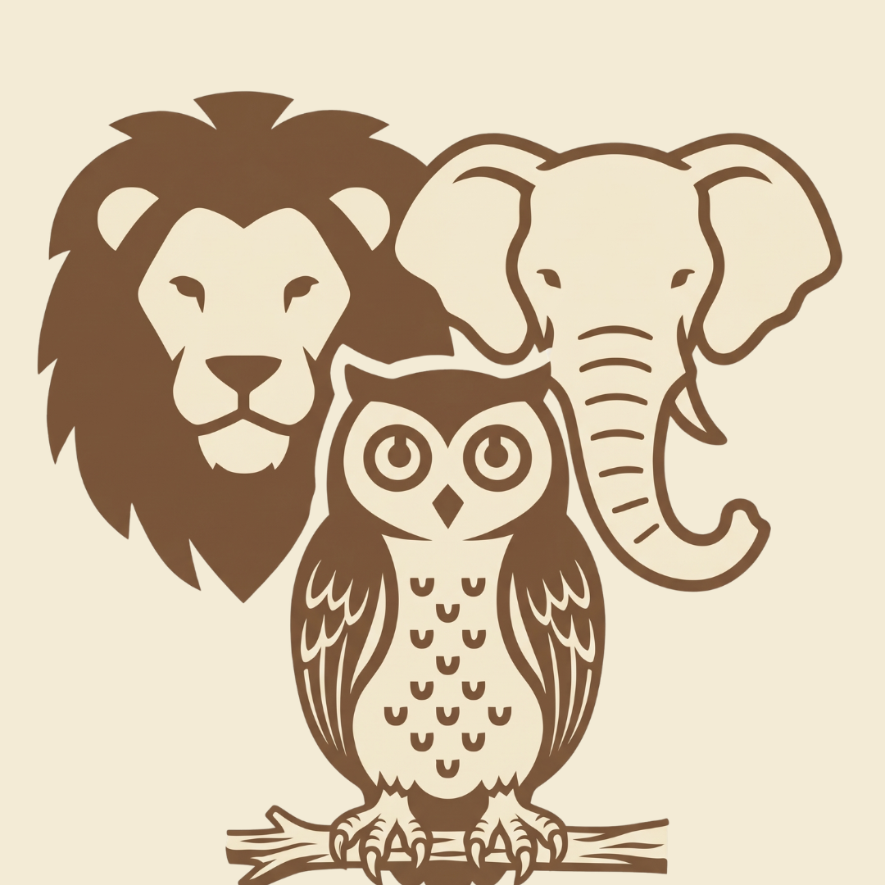
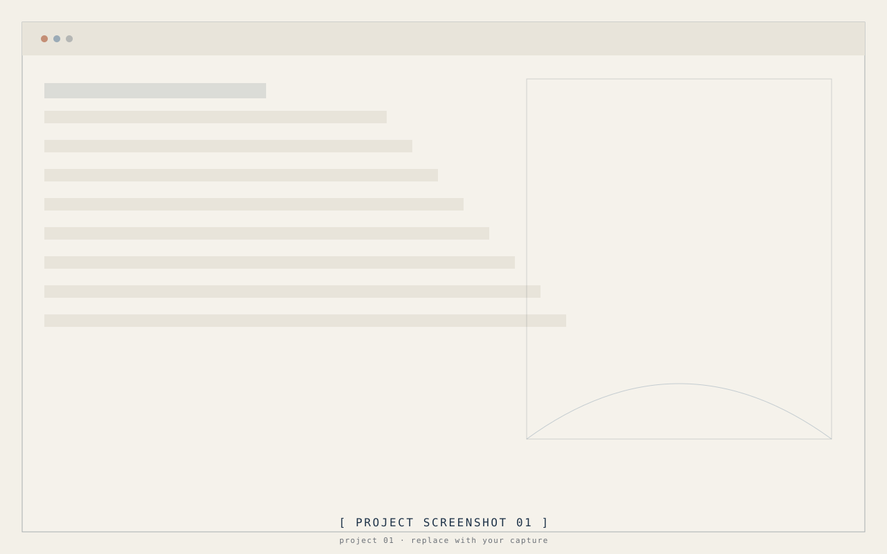
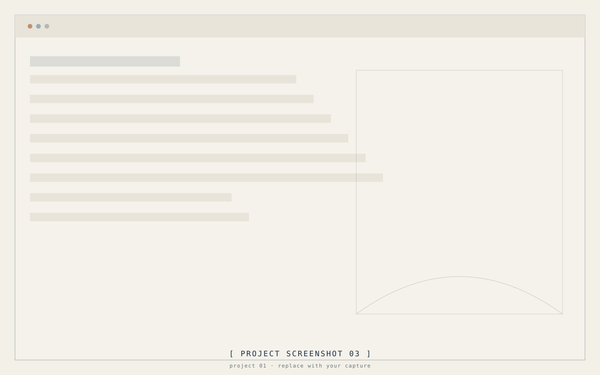

Academic

SahabatSatwa
SahabatSatwa is a mobile application for discovering zoos and wildlife destinations. It helps users find reliable information about destinations, including locations, descriptions, ratings, reviews, and directions.


01 / 03